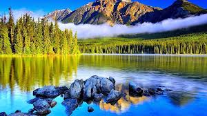
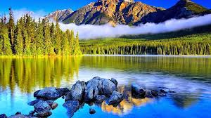

Whitewater Rafting Co.
Our Mission

Our mission is to provide thrilling and safe rafting adventures for enthusiasts of all skill levels. We strive to create unforgettable experiences on the water, blending the excitement of whitewater rafting with the beauty of nature.
Whether you're a first-time rafter or a seasoned adventurer, we are committed to delivering exceptional service, professional guidance, and a deep respect for the environment. Safety is our top priority, and we take pride in offering exhilarating experiences while ensuring the well-being of our guests and our rivers.
Join us for an adventure where excitement meets serenity, and let us help you create memories that will last a lifetime.
History
Our company started over 20 years ago with a passion for river adventures. Founded by a group of outdoor enthusiasts, we began with just a few rafts and a love for exploring the wild and untamed rivers of the region. What started as a small weekend operation for local adventurers soon grew into one of the most trusted names in whitewater rafting.
Over the years, we've expanded our services, offering trips for all skill levels, from beginners looking for a fun and safe introduction to rafting, to seasoned thrill-seekers who want to tackle some of the most challenging rapids in the country. Our team of certified guides brings decades of experience, ensuring that every trip is both exciting and safe.
In addition to rafting, we’ve also developed strong relationships with local communities, promoting eco-friendly tourism and helping to preserve the natural beauty of our rivers. Today, we’re proud to offer world-class adventures while keeping the spirit of exploration alive for future generations.
 
